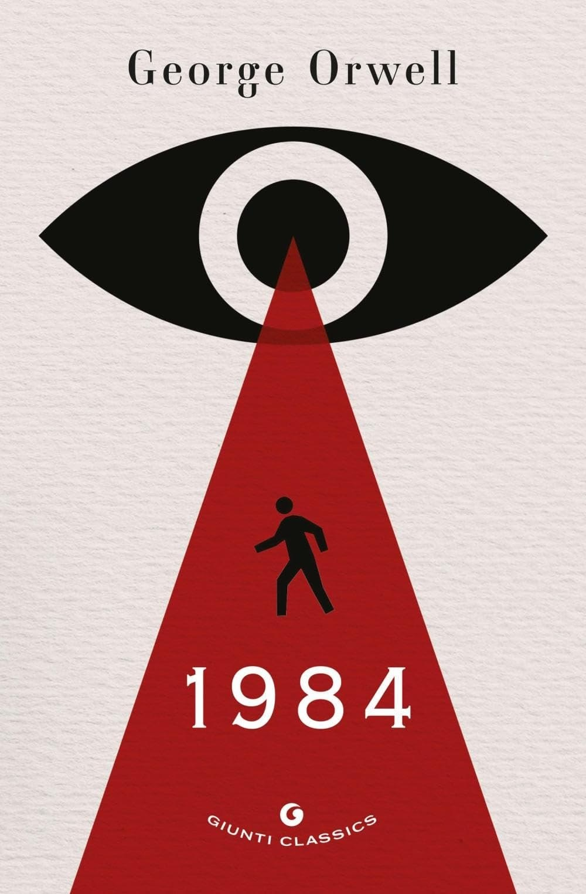
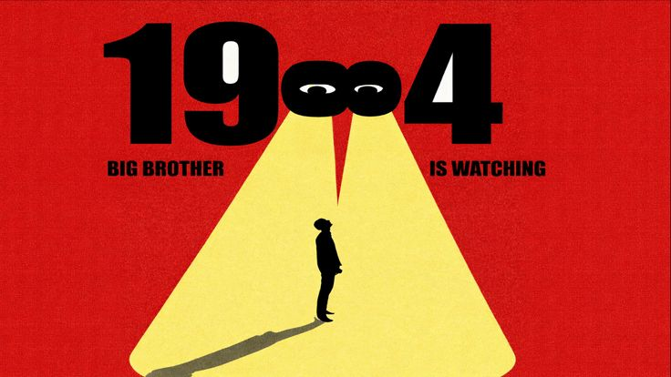

1984


Антиутопия · 344 страницы · Джордж Оруэлл
Роман о мире тотального контроля, где за людьми следят, а правду переписывают под нужды власти. Главный герой пытается сохранить собственную память и свободу мысли.
Для читателя, который любит медленное напряжение и размышления о свободе. Книга даёт повод обсудить, как устроены привычные нам правила и почему важно задавать вопросы.